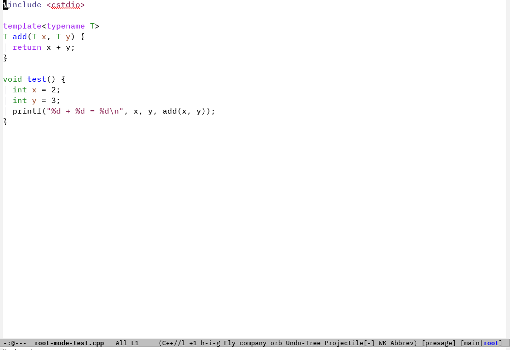
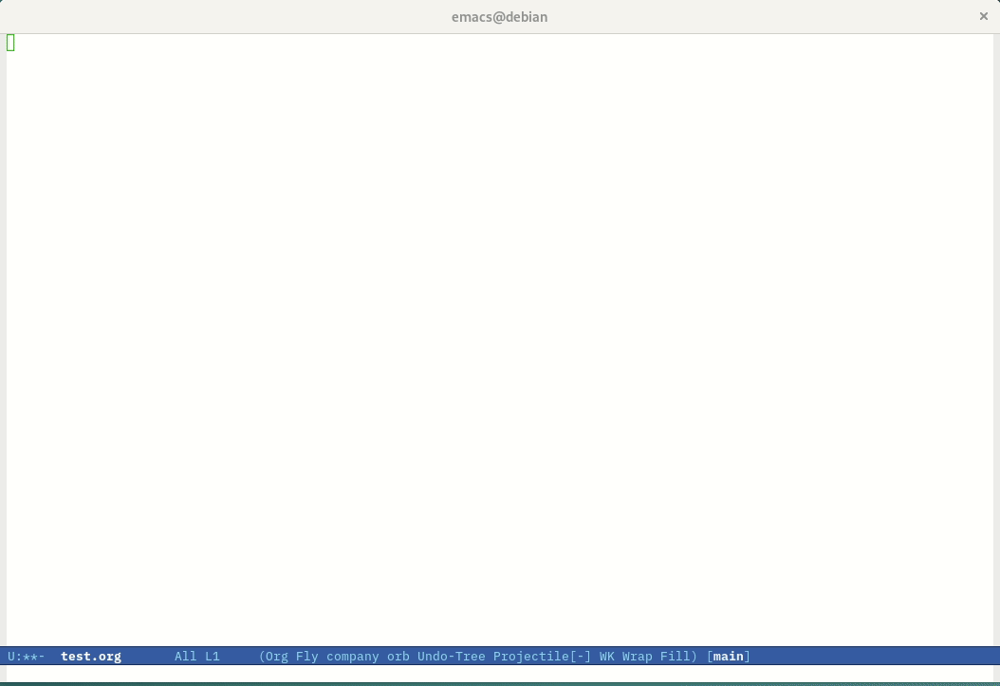

CERN-ROOT-mode User Manual
Table of Contents
1. Introduction
This is the user-manual for the CERN-ROOT-mode package, the source code of which can be found at https://github.com/jaypmorgan/cern-root-mode. In this manual, I detail how to install, use, customise, and help develop CERN-ROOT-mode.
CERN-ROOT-mode is an Emacs major-mode for interacting with ROOT (https://root.cern/). Specifically, this package provides the facilities to run the ROOT command line interface/REPL.
1.1. What is ROOT?
ROOT enables statistically sound scientific analyses and visualization of large amounts of data: today, more than 1 exabyte (1,000,000,000 gigabyte) are stored in ROOT files. The Higgs was found with ROOT!
1.2. What is CERN-ROOT-mode?
CERN-ROOT-mode is a major-mode in Emacs that provides the functionality to easily interact with the ROOT REPL. In this, we have provided various functions such as: creating a new REPL, sending lines/function definitions/evaluating files in this REPL. In addition to working with C++ files. This functionality is extended to org-mode. In this way, we may create C++ source code blocks and evaluate their contents, once again, using the ROOT REPL.

Figure 1: A brief example of what we want CERN-ROOT-mode to do: that is evaluate C++ statements in the ROOT REPL, quickly and easily.
2. Installation
2.1. Installing with package.el
CERN-ROOT-mode is available on Melpa, so if you use package.el, and assuming that
you've added Melpa to the list of package archives (as shown below), then you can
run (package-install 'cern-root-mode).
(require 'package) (add-to-list 'package-archives '("melpa" . "https://melpa.org/packages/") t) ;; Comment/uncomment this line to enable MELPA Stable if desired. See `package-archive-priorities` ;; and `package-pinned-packages`. Most users will not need or want to do this. ;;(add-to-list 'package-archives '("melpa-stable" . "https://stable.melpa.org/packages/") t) (package-initialize)
(package-install 'cern-root-mode)
2.2. Manual installation
First you will need to clone the repository from Github:
git clone https://github.com/jaypmorgan/cern-root-mode ~/.emacs.d/cern-root-mode
After, in Emacs, you can load the package. First we're adding this cloned directory
to the load-path. This will ensure that when we call (load "root"), Emacs will be
able to find a root.el. After, we call (require 'cern-root-mode) which will allow us to
begin using the package straight away.
(add-to-list 'load-path "~/.emacs.d/cern-root-mode/") (load "root") (require 'cern-root-mode)
If you want to configure some of the variables, these can be done using setq. One
variable that you might want to customise is the cern-root-filepath. This variable is the
path (absolute or relative) to the ROOT REPL executable.
(setq cern-root-filepath "/path/to/root" cern-root-terminal-backend 'vterm)
You may also want to configure some key-bindings to the commonly used functions. I would suggest that these key-bindings are only created within the C++ keymap.
(define-key 'c++-mode-map (kbd "C-c C-c") 'cern-root-eval-defun-maybe) (define-key 'c++-mode-map (kbd "C-c C-b") 'cern-root-eval-buffer) (define-key 'c++-mode-map (kbd "C-c C-l") 'cern-root-eval-file)
In summary we would have the following configuration:
(add-to-list 'load-path "~/.emacs.d/cern-root-mode/") (load "root") (require 'cern-root-mode) (setq cern-root-filepath "/path/to/root" cern-root-terminal-backend 'vterm) (define-key 'c++-mode-map (kbd "C-c C-c") 'cern-root-eval-defun-maybe) (define-key 'c++-mode-map (kbd "C-c C-b") 'cern-root-eval-buffer) (define-key 'c++-mode-map (kbd "C-c C-l") 'cern-root-eval-file)
2.3. Using use-package and straight.el
Here is one example of installing/configuring the package with straight.el:
(use-package cern-root-mode :bind (:map c++-mode-map (("C-c C-c" . cern-root-eval-defun) ("C-c C-b" . cern-root-eval-buffer) ("C-c C-l" . cern-root-eval-file) ("C-c C-r" . cern-root-eval-region))) :straight (cern-root-mode :type git :host github :repo "jaypmorgan/cern-root-mode") :config (setq cern-root-filepath "/path/to/root"))
3. Using cern-root-mode
When in a C++ major-mode buffer, enter the command (using M-x): cern-root-run. This will
start a new instance of the ROOT REPL in the same window.
If you want to create a new window for the ROOT REPL, instead of using cern-root-run,
enter the command: =cern-root-run-other-window. This will first split the window sensibly,
then create a new ROOT REPL in the other window.
3.1. Using ROOT in Org-mode
CERN-ROOT-mode provides the functionality to execute C++ source code blocks using the ROOT REPL instead of the default C++ executable. This can make the process of writing C++ in org-mode more fluid (for an example, see fig:org-mode-test).

Figure 2: Evaluating C++ source code blocks within Org-mode documents using ROOT!
To write C++ code blocks that then are executed using ROOT, specify
root as the language in the begin_src header. For example:
#+begin_src root // write your code here. #+end_src
Upon executing this code block (such as with C-c C-c), this code
will be executed in the ROOT REPL instead.
Code can be written and re-used over multiple code blocks with the use
of the :session argument (with an optional name). By providing this
argument, a ROOT REPL instance will be created that can be used within
the context of many source blocks. For example, let's create another
code block with this session argument:
#+begin_src cern-root :session *my-root-session*
void test() {
// print something
printf("This is something");
}
#+end_src
When we first run this code block, CERN-ROOT-mode will create a new
instance of the ROOT REPL in the buffer named *my-root-session* (you
can switch to this buffer if you want to interact directly outside of
the code blocks!). This means that, by specifying the same argument to
a different code block, we can call this test function.
#+begin_src cern-root :session *my-root-session* test(); // call the test function #+end_src
This gets us a long way to achieving the same functionality as root --notebook, but
in Emacs.
4. Customisation
There are only a few variables provided by the package:
- cern-root-filepath – (string, default
"root") this is the absolute/relative path to the root executable. This could be left as the default "root" value if ROOT is available on your $PATH. - cern-root-command-options – (string, default
"") these are the command line options used when starting ROOT. By default there are no options. - cern-root-prompt-regex – (string, default
"^\\[[0-9;^k]+m?") this is the regular expression used to find the input prompt of the ROOT REPL. If there is a customised prompt, this will need to be updated to suit the customisation. - cern-root-buffer-name – (string, default
"*ROOT*") what to call the ROOT repl buffer when it starts. This could be left as the default*ROOT*, but its there for you to modify as you please. - cern-root-terminal-backend – (symbol, default
'terminal) the terminal emulator to run the ROOT instance in. There are only two current defined [=vterm=,inferior=]. By default, the terminal backend is set to =inferior. Though, there is still some issues in getting the auto-complete to work correctly. If you really need auto-complete, I would recommend switching the backend to'vterm(requires you've already installed vterm).
5. Developing CERN-ROOT-mode
5.1. Variable index
Variable cern-root-filepath (Default: ) Path to the ROOT executable.
Variable cern-root-command-options (Default: ) Command line options for running ROOT.
Variable cern-root-prompt-regex (Default: ) Regular expression to find prompt location in ROOT-repl.
Variable cern-root-terminal-backend (Default: ) Type of terminal to use when running ROOT.
Variable cern-root-buffer-name (Default: ) Name of the newly create buffer for ROOT.
5.2. Function index
Function cern-root-run nil Run an inferior instance of ROOT.
Function cern-root-run-other-window nil Run an inferior instance of ROOT in an different window.
Function cern-root-switch-to-repl nil Switch to the ROOT REPL.
Function cern-root-eval-region (arg1 arg2) Evaluate a region from BEG to END in ROOT. (fn BEG END)
Function cern-root-eval-line nil Evaluate this line in ROOT.
Function cern-root-eval-string (arg1) Send and evaluate a STRING in the ROOT REPL. (fn STRING)
Function cern-root-eval-defun nil Evaluate a function in ROOT.
Function cern-root-eval-buffer nil Evaluate the buffer in ROOT.
Function cern-root-eval-file (arg1) Evaluate FILENAME in ROOT. (fn FILENAME)
Function cern-root-change-working-directory (arg1) Change the working directory of ROOT to DIR. (fn DIR)
Function cern-root-list-input-history nil List the history of previously entered statements.
Function cern-root--remembering-position (&rest rest) Execute BODY and return to exact position in buffer and window. (fn &rest BODY)
Function cern-root--pluck-item (arg1 arg2) Return the value of EL in the plist LST. (fn EL LST)
Function cern-root--make-earmuff (arg1) Give a NAME earmuffs, i.e. some-name -> *some-name*. (fn NAME)
Function cern-root--make-no-earmuff (arg1) Remove earmuffs from a NAME if it has them, *some-name* -> some-name. (fn NAME)
Function cern-root--set-env-vars nil Set the environment variable for current directory. Setup the environment variables so that no colours or bold fonts will be used in the REPL. This prevents comint from creating duplicated input in trying to render the ascii colour codes. Function returns t if the variables have been set, else nil. This return value is very useful for deciding if the variables should be unset, as we will want not want to remove the user’s existing rcfiles.
5.3. Testing
To test the functionality of the package, some unit tests have been
stored in the tests/ directory. To run these unit tests, you can
either evaluate the specific buffer in Emacs and run ert (see
https://www.gnu.org/software/emacs/manual/html_node/ert/Running-Tests-Interactively.html
for more information), or you can them all from the command line
using:
emacs -batch \ -l ert \ -l cern-root-mode.el \ -l tests/test-cern-root-mode.el \ -f ert-run-tests-batch-and-exit
5.4. Contributions
All contributions should be directed to https://github.com/jaypmorgan/cern-root-mode where you can submit issues and pull-requests.